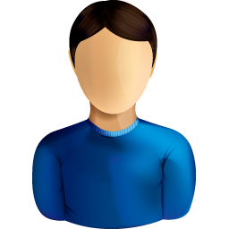

<div class="top">
  <i class="material-icons menu-icon">menu</i>
  
  <span>
    <div class="user-profile">
      <a>Ariyady Kurniawan</a> <br>
      <a>SE - JP</a>
    </div>
  </span>
  <span class="fill-remaining-space"></span>
  <div class="top-right">
      <i class="material-icons">settings</i>
      <i class="material-icons">power_settings_new</i>
  </div>
</div>